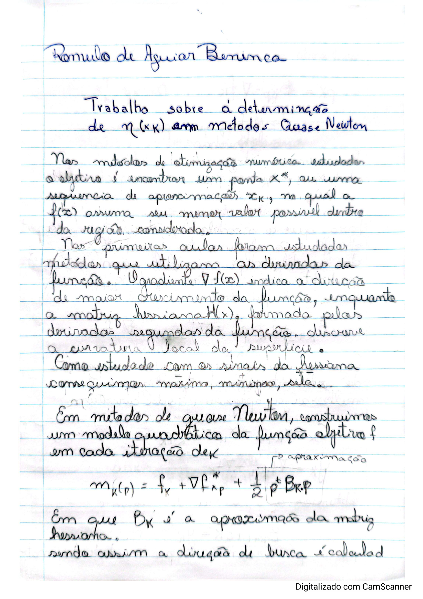
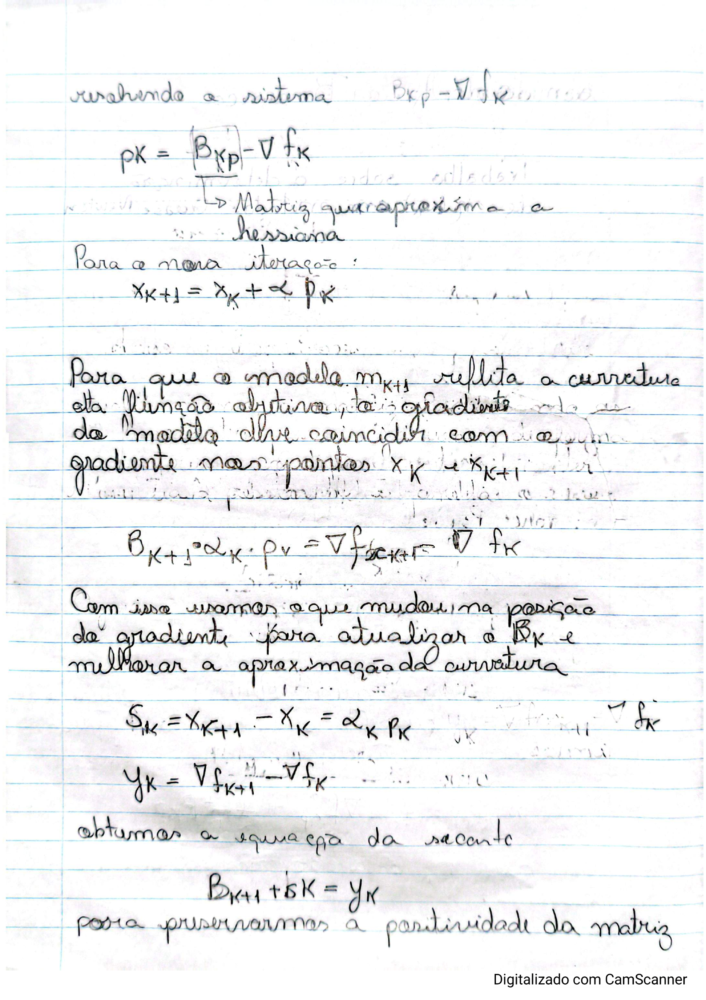
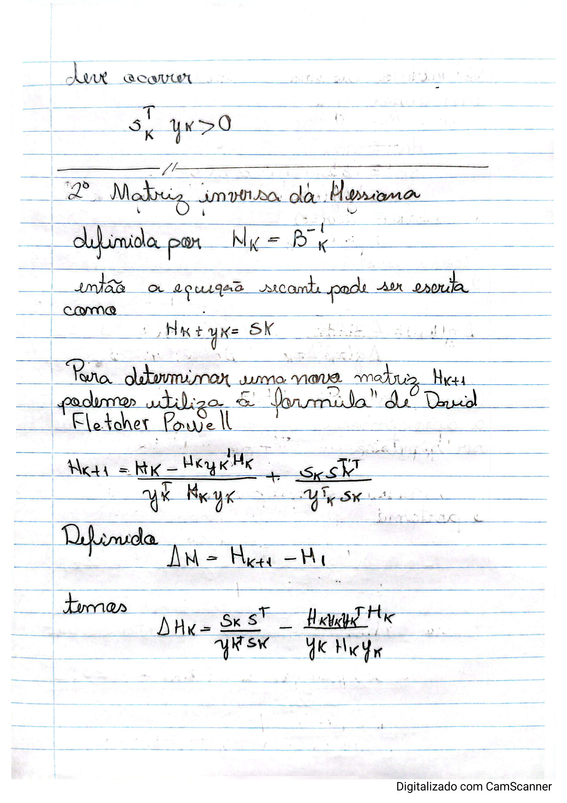
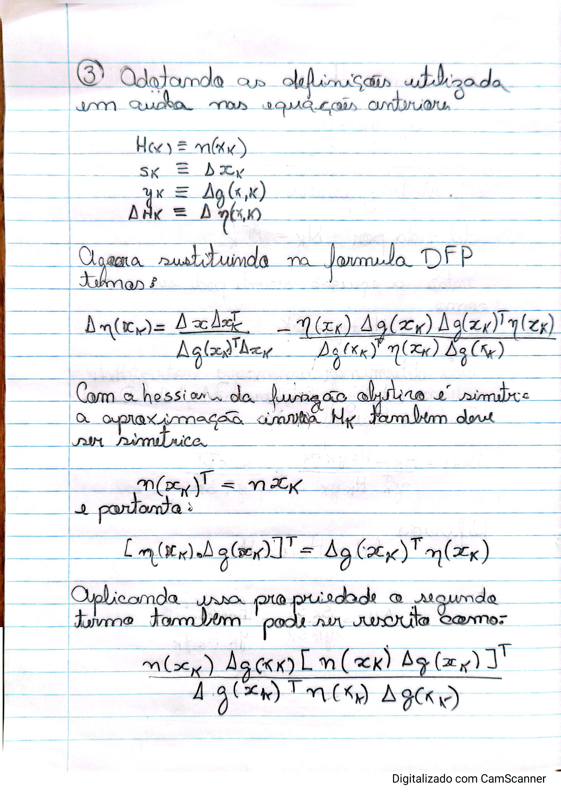
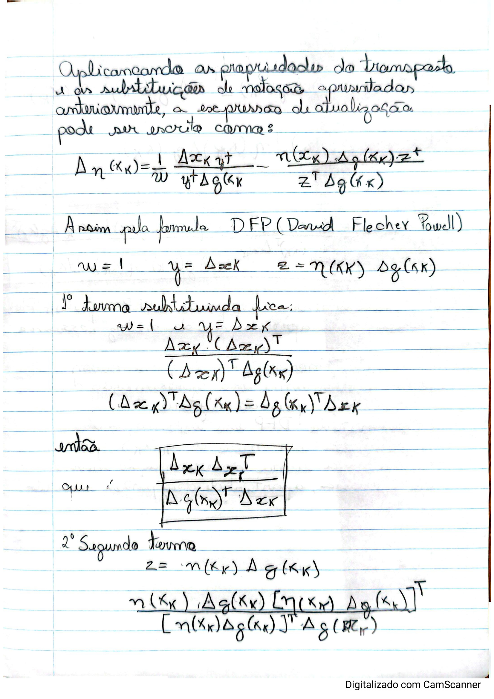
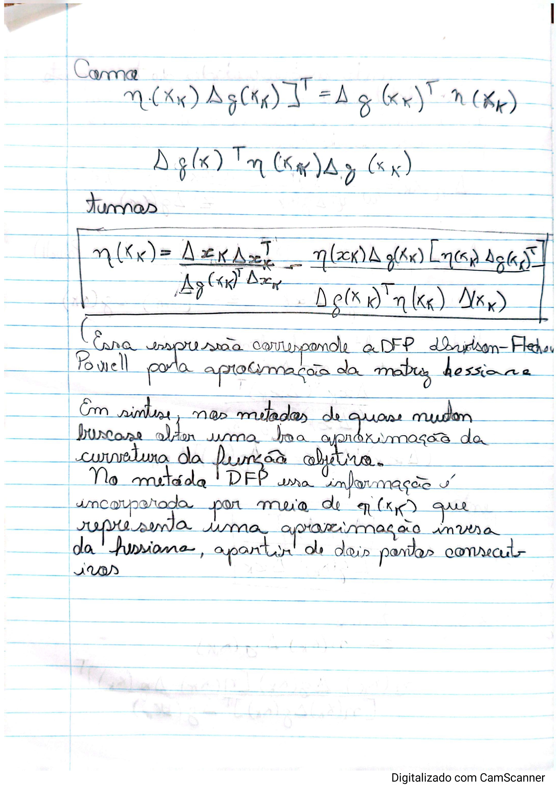

Otimização Não Linear — Trabalho 5
Romulo de Aguiar Beninca · Prof. Dr. Carlos Alberto Bavastri



0, definição de η_k como inversa da Hessiana aproximada e fórmula geral de David-Fletcher-Powell para atualização de H_k" />

